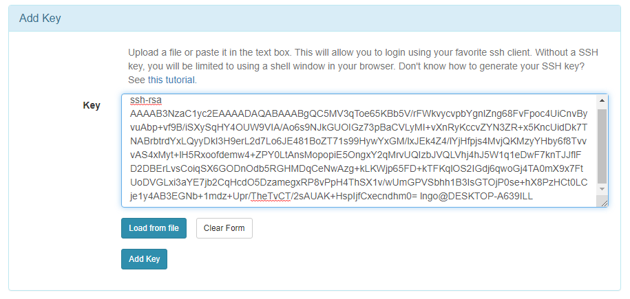
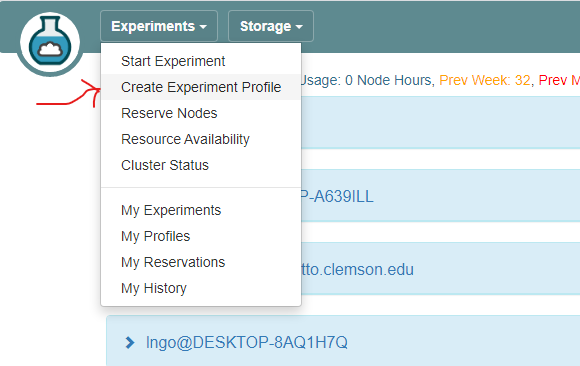

Introduction to CloudLab
Contents
Introduction to CloudLab#
1. CloudLab#
Overview
Visit CloudLab’s website
Click “Request an Account”
Fill in the information as shown in the following figure and click “Submit Request”
Wait for a confirm ation email to arrive in your wcupa.edu mailbox. You might have to resubmit a new request if you don’t see this email in about half an hour.

After your account is confirmed, the instructor will be able to see your application and can grant you access to CloudLab.
If you already had a CloudLab account, you can select
Start/Join Projectunder your username, then selectJoin Existing Projectand provide the namecloud-edu.
CloudLab Network
Experimental testbed for future computing research
Allow researchers control to the bare metal
Diverse, distributed resources at large scale
Allow repeatable and scientific design of experiments

GENI
Global Environment for Networking Innovation
Combining heterogeneous resource types, each virtualized along one or more suitable dimensions, to produce a single platform for network science researchers”
Key components:
GENI racks: virtualized computation and storage resources
Software-defined networks (SDNs): virtualized, programmable network resources
WiMAX: virtualized cellular wireless communication
Berman, M., Chase, J.S., Landweber, L., Nakao, A., Ott, M., Raychaudhuri, D., Ricci, R. , and Seskar, I., 2014. GENI: A federated testbed for innovative network experiments. Computer Networks, 61, pp.5-23.
Key experimental concepts
Sliceability: the ability to support virtualization while maintaining some degree of isolation for simultaneous experiments
Deep programmability: the ability to influence the behavior of computing, storage, routing, and forwarding components deep inside the network, not just at or near the network edge.
CloudLab Hardware
Utah/HP: Low-power ARM64 (785 nodes)
315 m400: 1X 8-core ARMv8 at 2.4GHz, 64GB RAM, 120GB flash
270 m510: 1X 8-core Intel Xeon D-1548 at 2.0 GHz, 64GB RAM, 256 GB flash
200 xl170: 1X 10-core Intel E5-2640v4 at 2.4 Ghz, 64 GB RAM, 480 GB SSD
Wisconsin/Cisco: 530 nodes
90 c220g1: 2X 8-core Intel Haswell at 2.4GHz, 128GB RAM, 1X 480GB SDD, 2X 1.2TB HDD
10 c240g1: 2X 8-core Intel Haswell at 2.4GHz, 128GB RAM, 1X 480GB SDD, 1X 1TB HDD, 12X 3TB HDD
163 c220g2: 2X 10-core Intel Haswell at 2.6GHz, 160GB RAM, 1X 480GB SDD, 2X 1.2TB HDD
7 c240g2: 2X Intel Haswell 10-core at 2.6GHz, 160GB RAM, 2X 480GB SDD, 12X 3TB HDD
224 c220g5: 2X 10-core Intel Skylake at 2.20GHz, 192GB RAM, 1TB HDD
32 c240g5: 2X 10-core Intel Skylake at 2.20GHz, 192GB RAM, 1TB HDD, 1 NVIDIA P100 GPU
4 c4130: 2X 8-core Intel Broadwell at 3.20GHz, 128GB RAM, 2X 960GB HDD, 4 NVIDIA V100
Clemson/Dell: 281 nodes
96 c8220: 2X 10-core Intel Ivy Bridge at 2.2GHz, 256GB RAM, 2X 1TB HDD
4 c8220x: 2X 10-core Intel Ivy Bridge at 2.2GHz, 256GB RAM, 8X 1TB HDD, 12X 4TB HDD
84 c6420: 2X 14-core Intel Haswell at 2.0GHz, 256GB RAM, 2X 1TB HDD
2 c4130: 2X 12-core Intel Haswell at 2.5GHz, 256GB RAM, 2X 1TB HDD, 2 NVIDIA K40m
2 dss7500: 2X 6-core Intel Haswell at 2.4GHz, 128GN RAM, 2X 126GB SSD, 45X 6TB HDD
72 c6420: 2X 16-core Intel Skylake at 2.6GHz, 386GB RAM, 2X 1TB HDD
6 ibm8335: 2X 10-core IBM POWER8NVL at 2.87GHz, 512GB RAM, 1X 2TB HDD, 2 NVIDIA GV100GL
15 r7515: 2X 32-core AMD EPYC Rome at 2.9GHz, 512GB RAM, 1X 2TB HDD, 2 NVIDIA GV100GL
2. Setup SSH#
Command line terminal software
Download and install Windows Terminal from the Microsoft Store.
Command line terminal software on Mac
Use the Search box (magnifying glass on top-right of your Mac Desktop) and type in the word
Terminal.Launch the resulting Terminal app.
SSH setup
Launch your terminal (Windows Terminal or Mac) and run the following command:
Hit
Enterfor all questions. Do not enter a password or change the default location of the files.
cd
ssh-keygen -t rsa
Run the following command to display the public key
Drag your mouse over to paint/copy the key (just the text, no extra spaces after the last character)
cat ~/.ssh/id_rsa.pub

Log into CloudLab, click on your username (top right) and select
Manage SSH Keys:

Paste the key into the
Keybox and clickAdd Key:

3. CloudLab Profiles and Experiments#
Setup GitHub repository
Go to your GitHub account, under
Repositories, selectNew.

You can select any name for your repo.
Repository must be
public.The
Add a README filebox must be checked.Click
Create repositorywhen done.

Click
Add fileand selectCreate new file

Type
profile.pyfor the file name and enter the content below into the text editor.Click
Commit new filewhen done.
Profile creation and experiment instantiation
Login to your CloudLab account, click
Experimentson top left, selectCreate Experiment Profile.

Click on
Git Repo

Paste the URL of your previously created Git repo here and click
Confirm

Enter the name for your profile, put in some words for the Description.
You will not have a drop-down list of Project.
Click
Createwhen done.

Click
Instantiateto launch an experiment from your profile.

Select a Cluster from Wisconsin, Clemson, or Emulab, then click
Next.Do not do anything on the next
Start on date/timescreen. ClickFinish.

Your experiment is now being
provision, and then `booting


When it is ready, you can use the provided SSH command to log in to your experiment (assuming your key was set up correctly).
The command is in the List View tab.